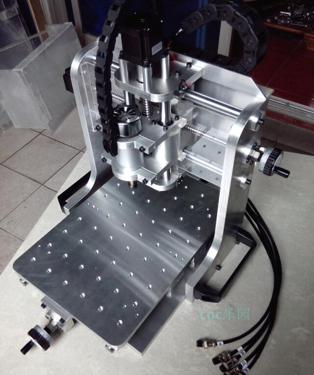
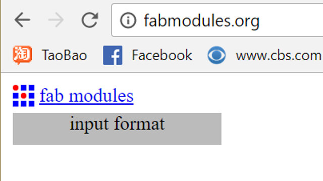

Index
Electronics Production
PCB Production process
GROUP TASK
Characterize your PCB production processes for your machine
The cnc
Specifications
Caracterisation
Milling
For the milling process we will use the following software:
- Fab Modules
- Mach3
Fab Modules
We start by downloading a hi-res pattern at the electronics production site.

At Fab Modules
FABRICATION
Here are the two gcodes